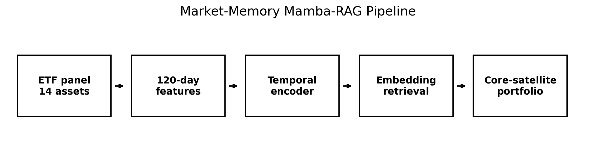
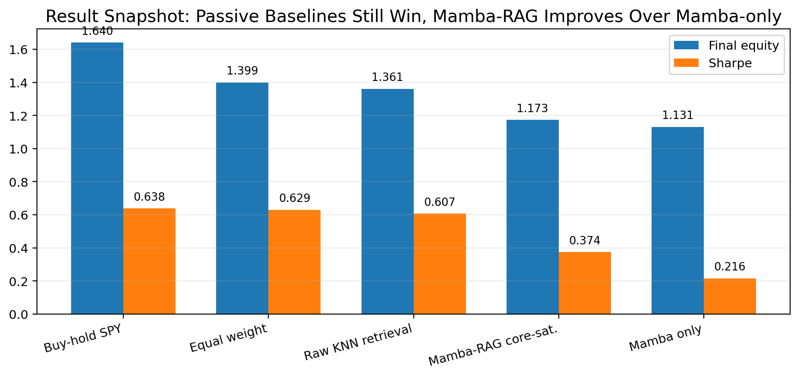
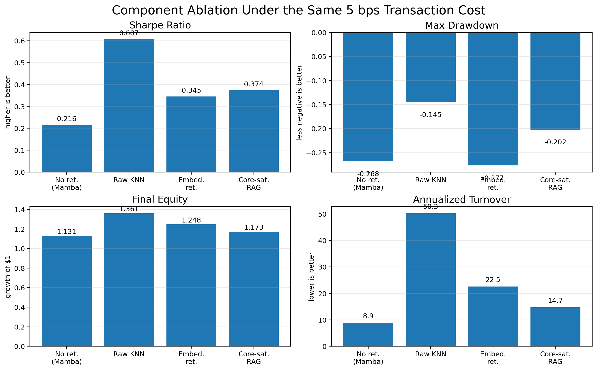
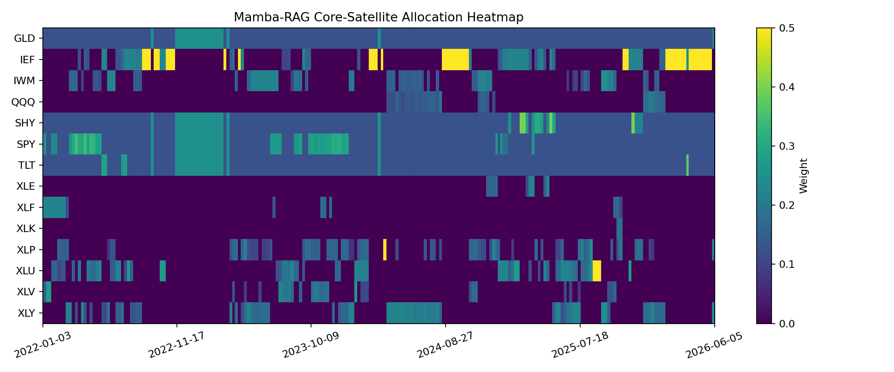
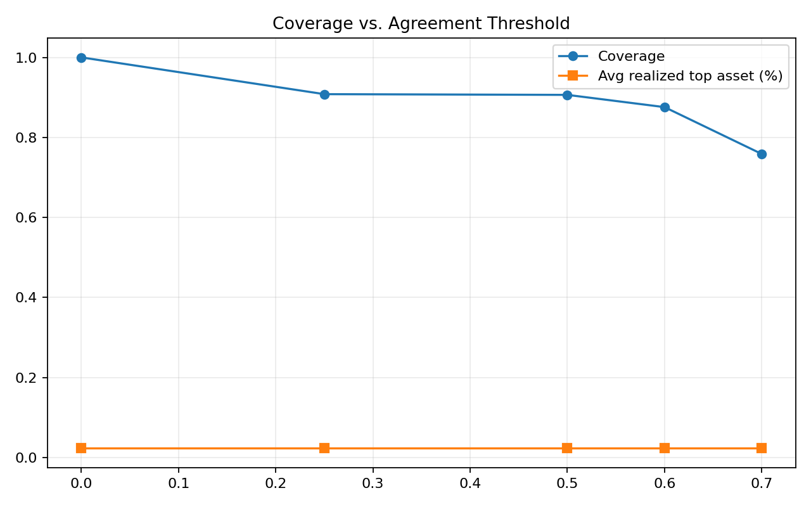

In finance, the hard part is not only forecasting. It is deciding whether a forecast is trustworthy.
Raw retrieval is interpretable, but a short price pattern is not a full market state. We therefore combine a temporal neural encoder with retrieval: the model predicts, and historical analogues audit that prediction before capital is allocated.
Longer context
Use 120-day multi-asset features instead of only a short SPY pattern.
Historical analogues
Trade more confidently when model forecasts and retrieved futures agree.
Core-satellite
Keep a stable defensive core and use model/retrieval signals as tactical tilts.
Pipeline: encode the market, retrieve similar past states, allocate with risk control.

Data
Daily ETF panel: SPY, QQQ, IWM, TLT, IEF, SHY, GLD, and major sector ETFs.
Model
Mamba-style temporal encoder with a TSMixer fallback when official Mamba kernels are unavailable.
Decision
Combine model score, retrieved neighbor outcomes, and agreement into ETF allocation weights.
Passive exposure won this test, but Mamba-RAG improved the neural signal.
We should not claim market-beating alpha. The clean claim is component-level: retrieval improves over Mamba-only, and the core-satellite layer turns the signal into a more controlled portfolio.
Buy-hold SPY: 1.640
The test period rewarded continuous equity exposure.
Mamba-RAG: 1.173
Higher than Mamba-only, lower than passive ETF baselines.
Turnover: 14.7
Less aggressive than retrieval-only variants.
| Strategy | Final | CAGR | Sharpe | Max DD | Ann. Turnover | Short interpretation |
|---|---|---|---|---|---|---|
| buy_hold_spy | 1.640 | 0.119 | 0.638 | -0.243 | 0.0 | best final equity |
| equal_weight_all | 1.399 | 0.079 | 0.629 | -0.177 | 0.0 | strong diversified baseline |
| raw_knn_retrieval_only | 1.361 | 0.072 | 0.607 | -0.145 | 50.3 | strong but overactive |
| embedding_retrieval_only | 1.248 | - | 0.345 | -0.277 | 22.5 | learned memory only |
| mamba_rag_core_satellite | 1.173 | 0.037 | 0.374 | -0.202 | 14.7 | balanced proposed method |
| mamba_only | 1.131 | 0.028 | 0.216 | -0.268 | 8.9 | no retrieval |

Retrieval helps, but the construction rule decides how usable the signal is.
All four variants below use the same test split and the same 5 bps L1 turnover cost. The ablation supports a nuanced claim: raw KNN is the strongest standalone signal here, but the final core-satellite design is more controlled and auditable.

The model is inspectable: allocations, agreement, and embeddings can be checked.





Useful project, not investment advice.
The evidence is a historical backtest with simplified costs. The final claim should be about design and auditability, not guaranteed alpha.
Not robust yet
Seed robustness and walk-forward retraining should be added before making stronger claims.
Lookback still matters
60/120/252-day ablations would directly test how much memory is needed.
Execution simplified
Taxes, market impact, slippage regimes, and intraday execution are not modeled.